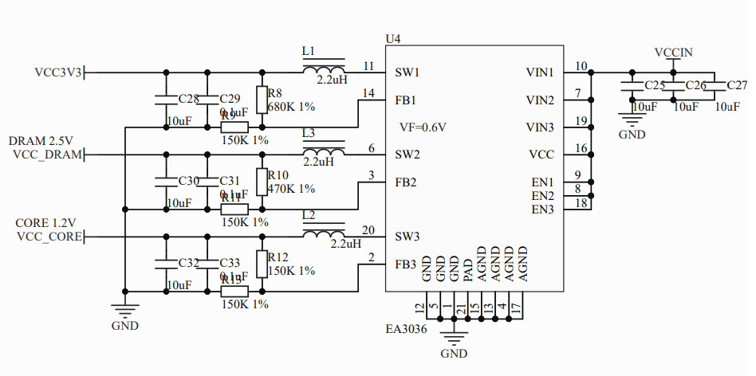
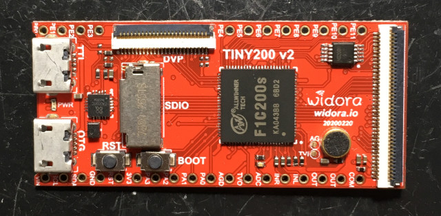

F1C200S >> Assembly
如何超頻到1.2GHz
參考資料：
1. pdf
2. lichee
3. mangopi_r
4. allwinner
VCC_CORE電壓足夠，才可以做超頻的動作，VCC_CORE是由EA3036供電，目前是1.2V

電壓計算方式如下，從公式可以得知，只要把R13改成75K，輸出電壓就可以變成 0.6 * (150K / 75K) + 0.6 = 1.8V

絲印位置

料雞已經就位

焊接

確定電壓是1.8V

CPU速度計算公式
PLL = (24MHz*N*K)/(M*P) N = 51 K = 1 M = 1 P = 1 PLL = (24MHz*52*1)/(1*1) = 1248Hz
main.s
.global _start
.equiv CCU_BASE, 0x01c20000
.equiv GPIO_BASE, 0x01c20800
.equiv PLL_CPU_CTRL_REG, 0x0000
.equiv PLL_PERIPH_CTRL_REG, 0x0028
.equiv AHB_APB_HCLKC_CFG_REG, 0x0054
.equiv BUS_CLK_GATING_REG2, 0x0068
.equiv BUS_SOFT_RST_REG2, 0x02d0
.equiv PD, (0x24 * 3)
.equiv PORT_CFG0, 0x00
.equiv PORT_CFG1, 0x04
.equiv PORT_CFG2, 0x08
.equiv PORT_DATA, 0x10
.equiv PORT_PUL0, 0x1c
.equiv PORT_PUL1, 0x20
.arm
.text
_start:
.long 0xea000016
.byte 'e', 'G', 'O', 'N', '.', 'B', 'T', '0'
.long 0, __spl_size
.byte 'S', 'P', 'L', 2
.long 0, 0
.long 0, 0, 0, 0, 0, 0, 0, 0
.long 0, 0, 0, 0, 0, 0, 0, 0
_vector:
b reset
b .
b .
b .
b .
b .
b .
b .
reset:
ldr r4, =CCU_BASE
ldr r1, =(1 << 31) | (51 << 8)
str r1, [r4, #PLL_CPU_CTRL_REG]
0:
ldr r1, [r4, #PLL_CPU_CTRL_REG]
tst r1, #(1 << 28)
beq 0b
ldr r1, =(1 << 31) | (1 << 18) | (31 << 8)
str r1, [r4, #PLL_PERIPH_CTRL_REG]
0:
ldr r1, [r4, #PLL_PERIPH_CTRL_REG]
tst r1, #(1 << 28)
beq 0b
ldr r1, =(3 << 12)
str r1, [r4, #AHB_APB_HCLKC_CFG_REG]
ldr r4, =GPIO_BASE
mov r1, #1
str r1, [r4, #(PD + PORT_CFG0)]
0:
eor r1, #1
str r1, [r4, #(PD + PORT_DATA)]
b 0b
.end
接著測量一下I/O速度

I/O最高速度為2.8MHz，因為再怎麼超頻，I/O依舊維持在這個檔位，不過CPU速度已經可以跑到1.2GHz，如果電壓再繼續增加，司徒相信CPU還可以操到更高，因為官方說最高可以到2.6GHz